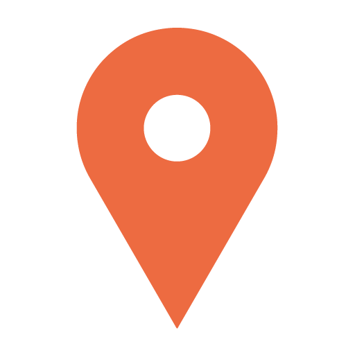
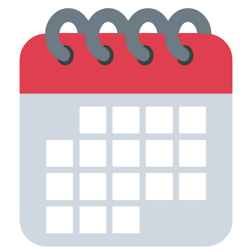

tutorial
Localização

Escolha a localização aproximada de onde você quer realizar a consulta. Não se esqueça de verificar a distância de busca.
Localização
Escolha a localização aproximada de onde você quer realizar a consulta.
Especialidade
Falta só mais uma coisa, tá quase! Escolha a(s) especialidade(s) que você quer realizar a consulta.
Especialidade
Escolha a(s) especialidade(s) que você quer realizar a consulta. Até 5 especialidades por vez.
Horários

Defina os horários em que você está disponível para as próximas consultas. Você poderá modificar depois, fique tranquilo!
main calendar